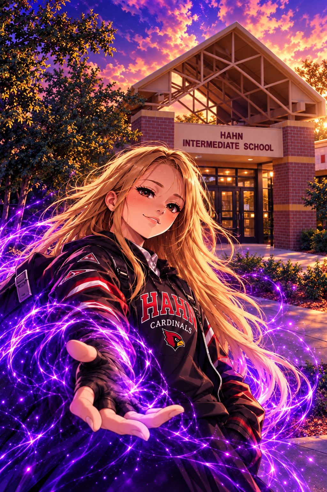

H.A.H.N.HEROES AWAKENING
HIDDEN NEXUS
✦ 250
EPISODE 1NEXUS
AWAKENED

H.A.H.N.HEROES AWAKENING HIDDEN NEXUS
SAME SCHOOL.
BIGGER MYSTERIES.
EPISODE 1 · UNLOCKEDNEXUS
AWAKENED
Four students discover a hidden door beneath Hahn—and meet the mysterious First Keeper.
“You are capable
of amazing things.”
GOOD KIDS
CHANGE THINGS ♛